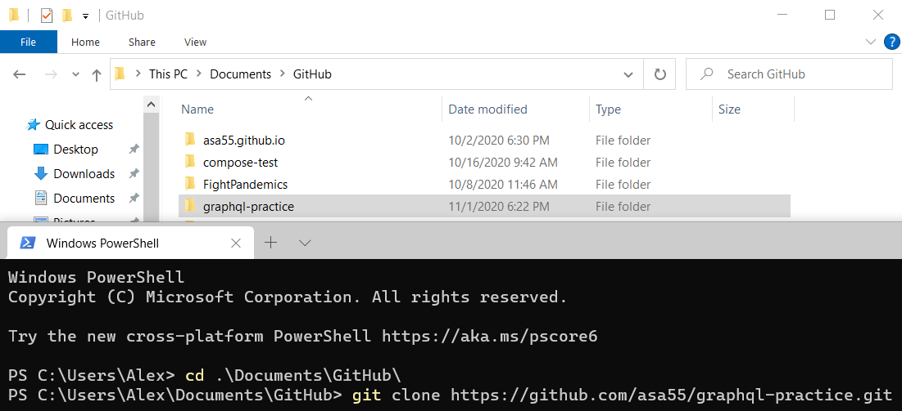
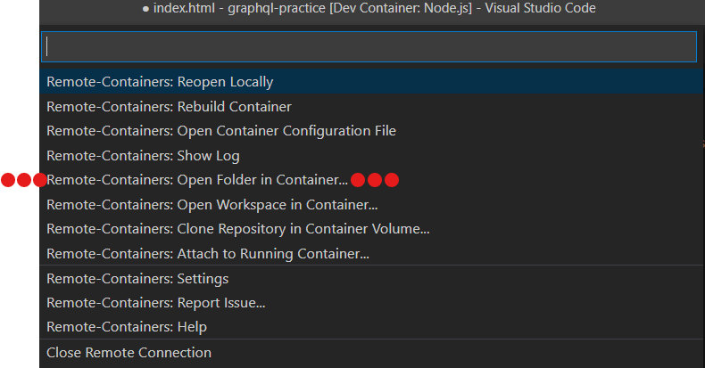
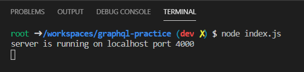
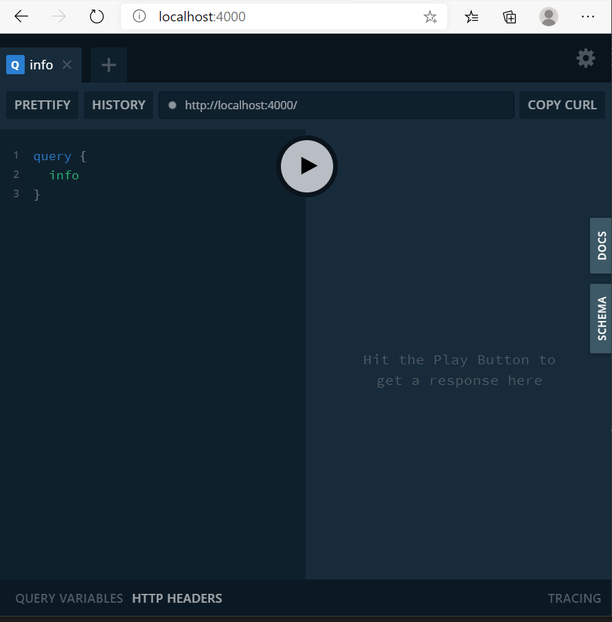

Learning GraphQL?  Practice with local GraphQL server in 5 simple steps:
Practice with local GraphQL server in 5 simple steps:
-
From the command line (in a folder of your choice), run
git clone https://github.com/asa55/graphql-practice.git

-
From VSCode (using the "Remote - Containers" extension), "Open Folder In Container". (This step requires Docker)

-
From inside the container (VSCode's terminal works fine), run
node index.js

-
Using your favorite browser, visit localhost:4000

-
Play with GraphQL! Looking for a place to start? Check out my GraphQL notes on GitHub here